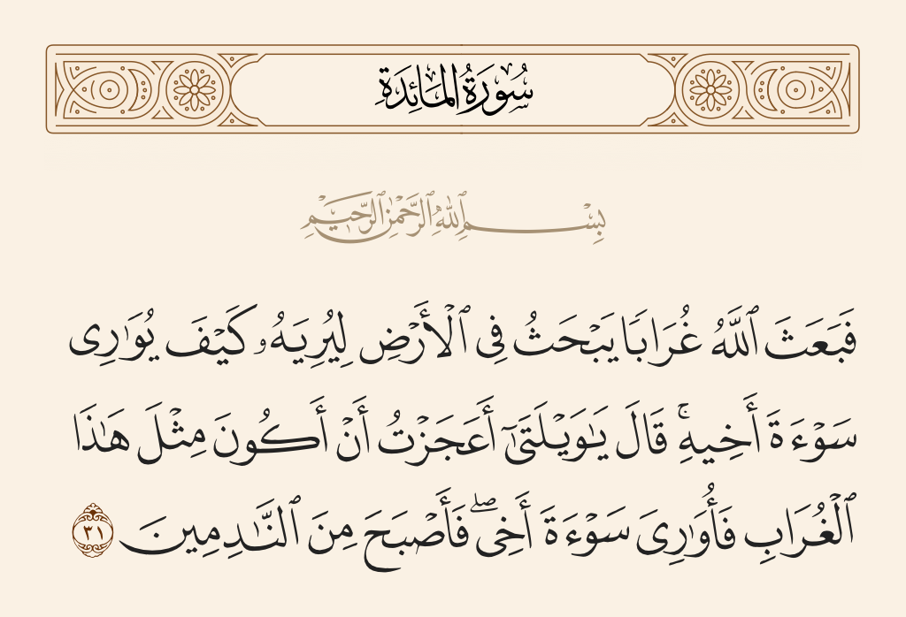

لما قتل ابن آدم أخاه لم يدر ماذا يصنع به ، لأنه أول ميت مات من بني آدم ، فأرسل الله تعالى غراباً يثير الأرض ليدفن فيه غراباً آخر ميتاً ـ على ما قاله بعض المفسرين ـ

والحكمة من تخصيص الغراب : أن الغراب هو الذي يقوم بدفن الأشياء دون غيره من الحيوانات.
قال القاسمي رحمه الله : "حكمة تخصيص الغراب : كون الغراب دأبه المواراة . قال أبو مسلم : عادة الغراب دفن الأشياء . فجاء غراب فدفن شيئاً فتعلم ذلك منه"